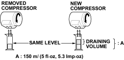

|
|
 WARNING
WARNING
The air conditioning system uses HFC-134a (R-134a) refrigerant and polyalkyleneglycol (PAG) refrigerant oil, which are not compatible with CFC-12 (R-12) refrigerant and mineral oil. Do not use R-12 refrigerant or mineral oil in this system and do not attempt to use R-12 servicing equipment; damage to the air conditioning system or your servicing equipment will result.
Separate the manifold gauge sets (pressure gauges, hoses, joints) for refrigerants R-12 and R-134a. Do not confuse them.
If accidental system discharge occurs, ventilate work area before resuming service.
R-134a service equipment or vehicle air conditioning systems should not be pressure tested or leak tested with compressed air.
Additional health and safety information may be obtained from the refrigerant and lubricant manufacturers.
- Always disconnect the negative cable from the battery whenever replacing air conditioning parts.
- Keep moisture and dirt out of the system. When disconnecting any lines, plug or cap the fittings immediately; do not remove the caps or plugs until just before you reconnect each line.
- Before connecting any hose or line, apply a few drops of refrigerant oil to the O-ring.
- When tightening or loosening a fitting, use a second wrench to support the matching fitting.
- When discharging the system, do not let refrigerant escape too fast; it will draw the compressor oil out of the system.
Recommended PAG oil: DELPHI DH-PS:
Add the recommended refrigerant oil in the amount listed if you replace any of the following parts.
- To avoid contamination, do not return the oil to the container once dispensed and never mix it with other refrigerant oils.
- Immediately after using the oil, reinstall the cap on the container and seal it to avoid moisture absorption.
- Do not spill the refrigerant oil on the vehicle; it may damage the paint; if it gets on the paint, wash it off immediately.
Condenser
25 ml (5/6 fl/oz, 0.9 lmp/oz)
Evaporator
45 ml (1 1/2 fl/oz, 1.6 lmp/oz)
Line or hose
10 ml (1/3 fl/oz, 0.4 lmp/oz)
Receiver/Dryer
10 ml (1/3 fl/oz, 0.4 lmp/oz)
Leakage repair
25 ml (5/6 fl/oz, 0.9 lmp/oz)
Compressor
For compressor replacement, subtract the volume of oil drained from the removed compressor from 150 ml (5 fl/oz, 5.3 lmp/oz) and drain the calculated volume of oil from the new compressor: 150 ml (5 fl/oz, 5.3 lmp/oz) - Volume of removed compressor = Volume to drain from new compressor.
NOTE: Even if no oil is drained from the removed compressor, do not drain more than 50 ml (1 2/3 fl/oz, 1.8 lmp/oz) from the new compressor.
